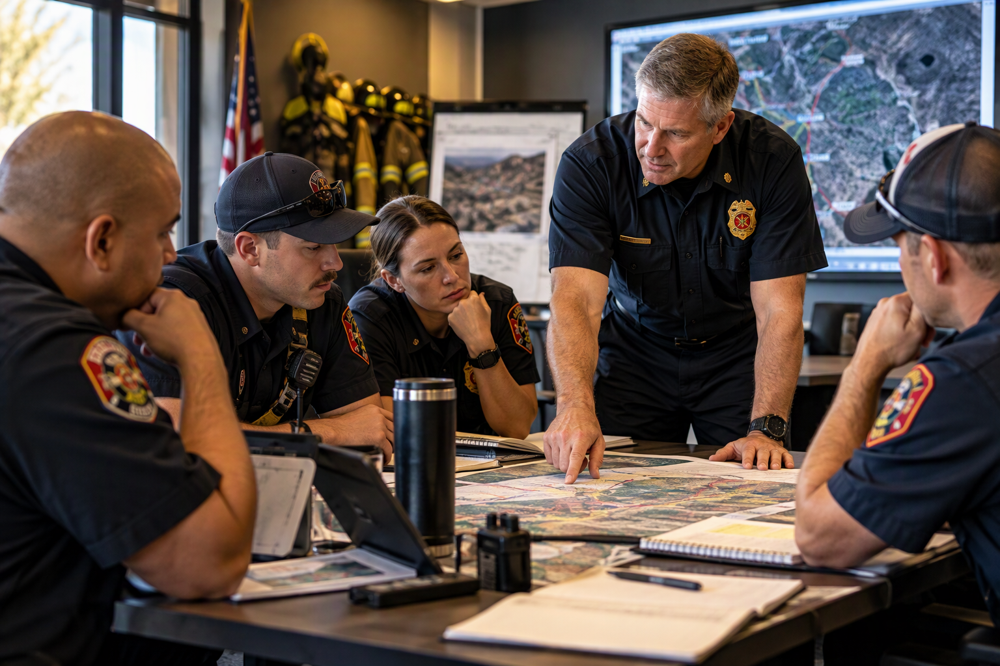

Training & Professional Development
Focused learning experiences designed around the people, leadership challenges, and goals of your organization.

Training That Connects to the Job
Solis training is designed to be practical, discussion-based, and relevant to the operating environment of public-safety organizations.
- Leadership and supervisory development
- Command and executive development
- Organizational communication
- Strategic-thinking workshops
- Team development and facilitation
- Customized department programs
Programs can be tailored to the audience, department goals, and desired length of delivery.